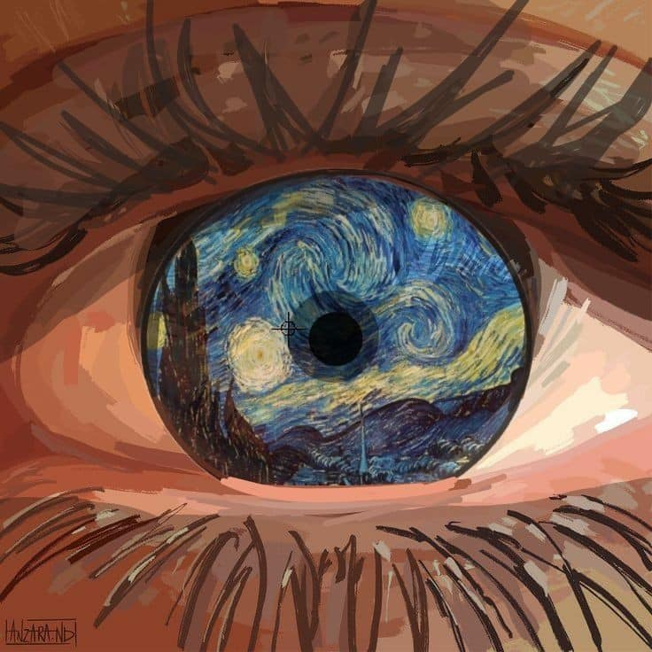

ES QUE AAAAAAAA
En tus ojos veo lo que Van gogh veía en las estrellas. ♡
Como Agnes✨
Tierna y dulce como ella, y ya por favor ya no crezcas, (Estas en la segunda decadaaaa).
Holis🤍
Te presento al niño al que tienes sonriendo a diario, creeme le haces mucho pero mucho bien, te quiere mucho mucho mucho.
SeguimosRecuerditos
No sabes cuanto me encanta pasar tiempo contigo waaa
Deadpool 3
Pensar que comenzó con una pelicula de Deadpool jaja
Día que no voy a olvidar, sobre todo porque entramos tarde -_- JAJAJAJAJAJAJAJAJAJAJJAJAJAJA disfrute mucho esa salida, sobre todo por las cosas de las que me di cuenta ese día jaja y uyy la charla que tuve con una personita durante y despues de...
Noches en llamada ♡
Cada una de las veces que terminamos desvelandonos jaja son la mejor forma de sacarle provecho a tu insomnio, me salías con cada cosaaa, pero amo tus preguntas que me dejan la mente en blanco y me reinician un momento.
Sigamonos amaneciendo oki?
Salimos con Thiaguitooo
WAAA no sabes lo bien que me sentí ese día, y aunque no se dió el plan inicial, eso no evitó que la pasaramos bien, como ya sabeees, tienes un amor de hermano, pude evidenciarlo, él te ama tanto como tú lo amas a él, par de preciosos.
Thiago vale 1000 y el número queda pero demasiado corto.